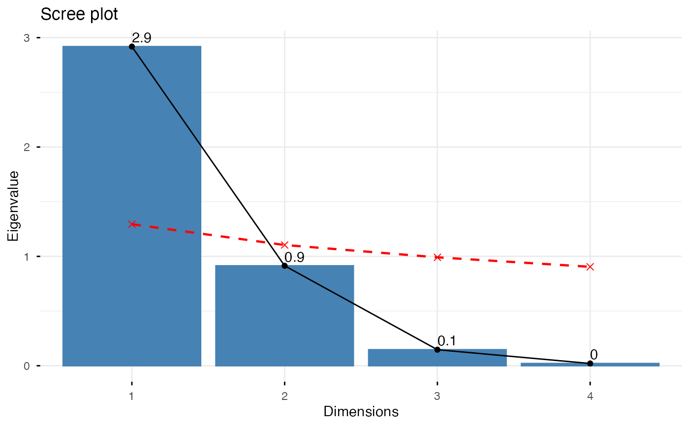
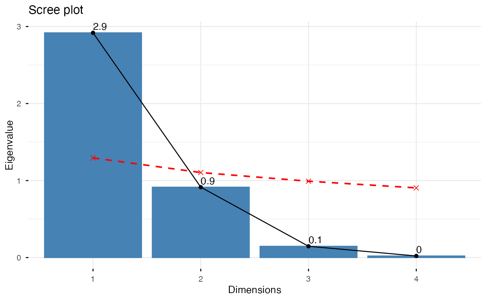

Eigenvalues correspond to the amount of the variation explained by each principal component (PC).
get_eig(): Extract the eigenvalues/variances of the principal dimensions
fviz_eig(): Plot the eigenvalues/variances against the number of dimensions
get_eigenvalue(): an alias of get_eig()
fviz_screeplot(): an alias of fviz_eig()
These functions support the results of Principal Component Analysis (PCA), Correspondence Analysis (CA), Multiple Correspondence Analysis (MCA), Factor Analysis of Mixed Data (FAMD), Multiple Factor Analysis (MFA) and Hierarchical Multiple Factor Analysis (HMFA) functions.
get_eig(X)
get_eigenvalue(X)
fviz_eig(
X,
choice = c("variance", "eigenvalue"),
geom = c("bar", "line"),
barfill = "steelblue",
barcolor = "steelblue",
linecolor = "black",
ncp = 10,
addlabels = FALSE,
hjust = 0,
main = NULL,
xlab = NULL,
ylab = NULL,
ggtheme = theme_minimal(),
parallel = FALSE,
parallel.color = "red",
parallel.lty = "dashed",
parallel.iter = 100,
...
)
fviz_screeplot(...)Arguments
- X
an object of class PCA, CA, MCA, FAMD, MFA and HMFA [FactoMineR]; prcomp and princomp [stats]; dudi, pca, coa and acm [ade4]; ca and mjca [ca package].
- choice
a text specifying the data to be plotted. Allowed values are "variance" or "eigenvalue".
- geom
a text specifying the geometry to be used for the graph. Allowed values are "bar" for barplot, "line" for lineplot or c("bar", "line") to use both types.
- barfill
fill color for bar plot.
- barcolor
outline color for bar plot.
- linecolor
color for line plot (when geom contains "line").
- ncp
a numeric value specifying the number of dimensions to be shown.
- addlabels
logical value. If TRUE, labels are added at the top of bars or points showing the information retained by each dimension.
- hjust
horizontal adjustment of the labels.
- main, xlab, ylab
plot main and axis titles.
- ggtheme
function, ggplot2 theme name. Default value is theme_pubr(). Allowed values include ggplot2 official themes: theme_gray(), theme_bw(), theme_minimal(), theme_classic(), theme_void(), ....
- parallel
logical value. If TRUE, adds a parallel analysis threshold line (Horn's method) to help determine the number of components to retain. Components with eigenvalues above this line are considered significant. Only works when choice = "eigenvalue" and X is a prcomp or princomp object. Default is FALSE.
- parallel.color
color of the parallel analysis threshold line. Default is "red".
- parallel.lty
line type for the parallel analysis line. Default is "dashed".
- parallel.iter
number of iterations for parallel analysis simulation. Default is 100.
- ...
optional arguments to be passed to the function ggpar.
Value
get_eig() (or get_eigenvalue()): returns a data.frame containing 3 columns: the eigenvalues, the percentage of variance and the cumulative percentage of variance retained by each dimension.
fviz_eig() (or fviz_screeplot()): returns a ggplot2
References
http://www.sthda.com/english/
Examples
# Principal Component Analysis
# ++++++++++++++++++++++++++
data(iris)
res.pca <- prcomp(iris[, -5], scale = TRUE)
# Extract eigenvalues/variances
get_eig(res.pca)
#> eigenvalue variance.percent cumulative.variance.percent
#> Dim.1 2.91849782 72.9624454 72.96245
#> Dim.2 0.91403047 22.8507618 95.81321
#> Dim.3 0.14675688 3.6689219 99.48213
#> Dim.4 0.02071484 0.5178709 100.00000
# Default plot
fviz_eig(res.pca, addlabels = TRUE, ylim = c(0, 85))
 # Scree plot - Eigenvalues
fviz_eig(res.pca, choice = "eigenvalue", addlabels=TRUE)
# Scree plot - Eigenvalues
fviz_eig(res.pca, choice = "eigenvalue", addlabels=TRUE)
 # Use only bar or line plot: geom = "bar" or geom = "line"
fviz_eig(res.pca, geom="line")
# Use only bar or line plot: geom = "bar" or geom = "line"
fviz_eig(res.pca, geom="line")
 # Parallel analysis (Horn's method) to determine number of components
# Components with eigenvalues above the red line are significant
fviz_eig(res.pca, choice = "eigenvalue", parallel = TRUE,
addlabels = TRUE, parallel.color = "red")

if (FALSE) { # \dontrun{
# Correspondence Analysis
# +++++++++++++++++++++++++++++++++
library(FactoMineR)
data(housetasks)
res.ca <- CA(housetasks, graph = FALSE)
get_eig(res.ca)
fviz_eig(res.ca, linecolor = "#FC4E07",
barcolor = "#00AFBB", barfill = "#00AFBB")
# Multiple Correspondence Analysis
# +++++++++++++++++++++++++++++++++
library(FactoMineR)
data(poison)
res.mca <- MCA(poison, quanti.sup = 1:2,
quali.sup = 3:4, graph=FALSE)
get_eig(res.mca)
fviz_eig(res.mca, linecolor = "#FC4E07",
barcolor = "#2E9FDF", barfill = "#2E9FDF")
} # }
# Parallel analysis (Horn's method) to determine number of components
# Components with eigenvalues above the red line are significant
fviz_eig(res.pca, choice = "eigenvalue", parallel = TRUE,
addlabels = TRUE, parallel.color = "red")

if (FALSE) { # \dontrun{
# Correspondence Analysis
# +++++++++++++++++++++++++++++++++
library(FactoMineR)
data(housetasks)
res.ca <- CA(housetasks, graph = FALSE)
get_eig(res.ca)
fviz_eig(res.ca, linecolor = "#FC4E07",
barcolor = "#00AFBB", barfill = "#00AFBB")
# Multiple Correspondence Analysis
# +++++++++++++++++++++++++++++++++
library(FactoMineR)
data(poison)
res.mca <- MCA(poison, quanti.sup = 1:2,
quali.sup = 3:4, graph=FALSE)
get_eig(res.mca)
fviz_eig(res.mca, linecolor = "#FC4E07",
barcolor = "#2E9FDF", barfill = "#2E9FDF")
} # }